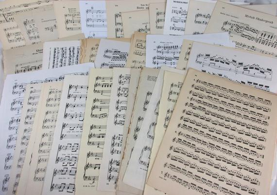

Huan Zhang
Music Technology @ Carnegie Mellon
Interests: Music information retrieval, Computational Musicology
LiveInConcert古典音乐
Classical Music Blog hosted on Wechat public platform. Features 100+ my rambling articles about composers, rare pieces, unforgettable concerts and even music themed movies. Written in Mandarin. Link to demo page and please follow in Wechat.
Photography

Featuring some of my travel moments from St.Petersburg, Moscow, Boston, Harbin, and Beijing.
Piano Interpretations
Sharing some of my beloved pieces.